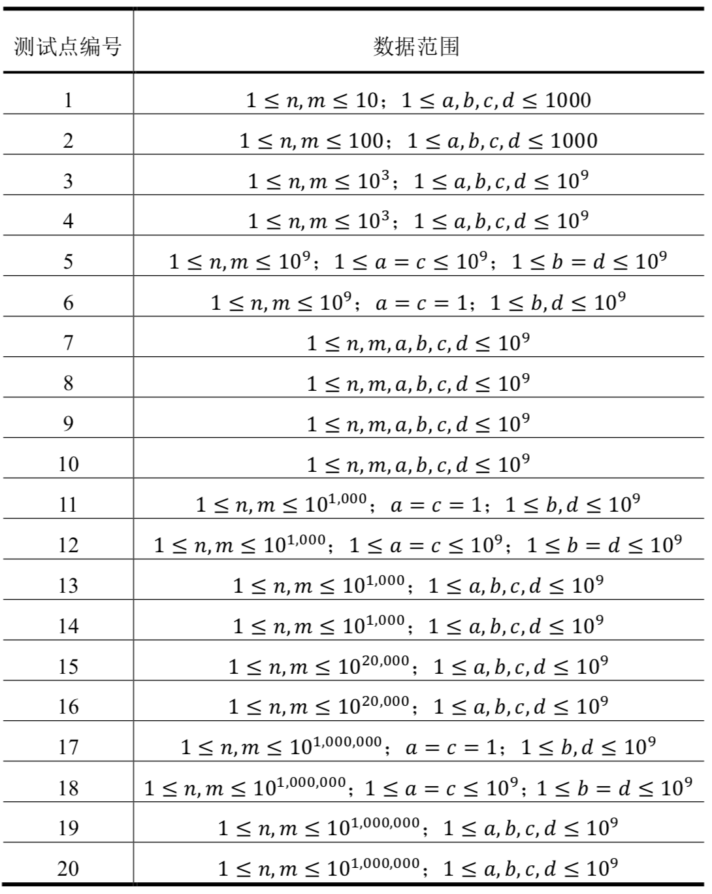

婷婷是个喜欢矩阵的小朋友，有一天她想用电脑生成一个巨大的$𝑛$行$𝑚$列的矩阵（你不用担心她如何存储）。她生成的这个矩阵满足一个神奇的性质：若用$F[𝑖][𝑗]$来表示矩阵中第$𝑖$行第$𝑗$列的元素，则$F[𝑖][𝑗]$满足下面的递推式：
$\begin{cases} F[1][1] = 1\\ F[𝑖][𝑗] = 𝑎 ∗ F[𝑖][𝑗 − 1] + 𝑏 & 𝑗 \ne 1 \\ F[𝑖][1]=𝑐∗F[𝑖−1][𝑚]+𝑑 & i \ne 1 \end{cases}$
递推式中$𝑎, 𝑏, 𝑐, 𝑑$都是给定的常数。
现在婷婷想知道$F[𝑛][𝑚]$的值是多少，请你帮助她。由于最终结果可能很大，你只需要输出$F[𝑛][𝑚]$除以1,000,000,007的余数。
包含一行有六个整数$𝑛, 𝑚, 𝑎, 𝑏, 𝑐, 𝑑$。意义如题所述。
包含一个整数，表示$F[𝑛][𝑚]$除以1,000,000,007的余数。
3 4 1 3 2 6
85
【样例1说明】
样例中的矩阵为：$\begin{pmatrix} 1 & 4 & 7 & 10 \\ 26 & 29 & 32 & 35 \\ 76 & 79 & 82 & 85 \end{pmatrix}$。
【数据规模和约定】

 Comet OJ
Comet OJ